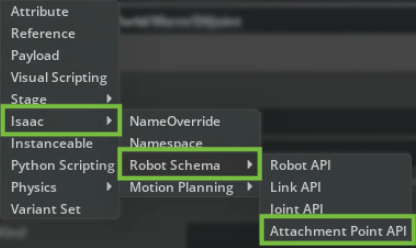
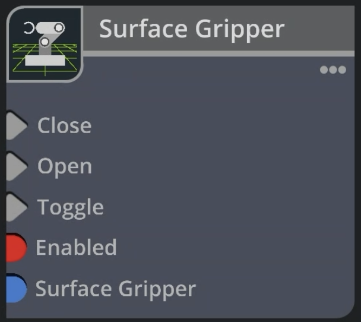
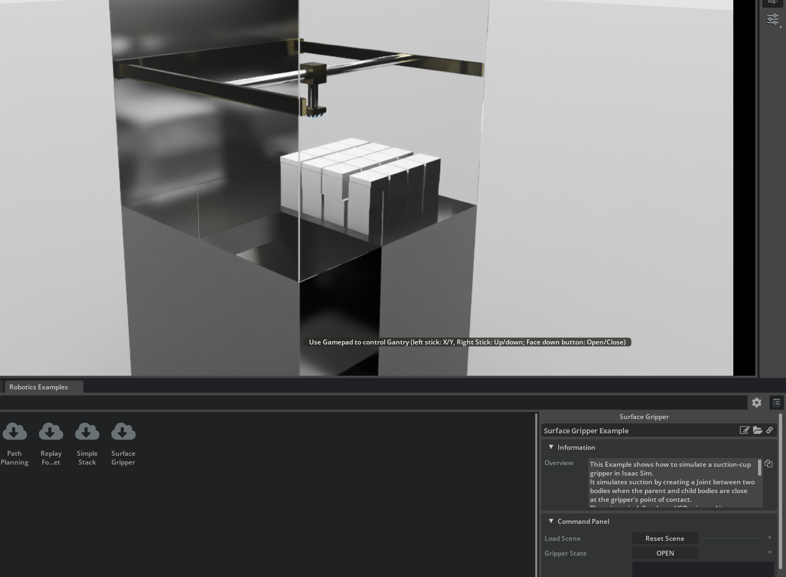
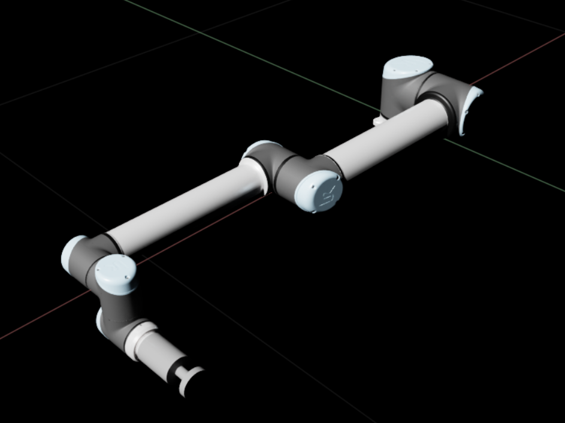
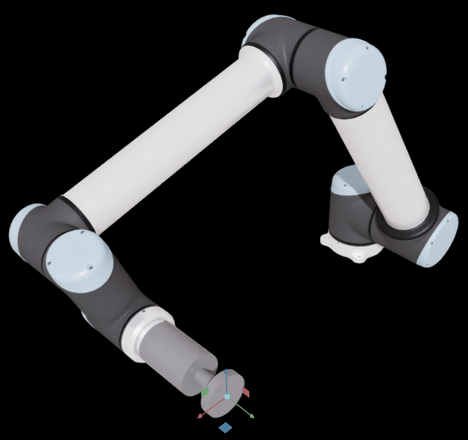
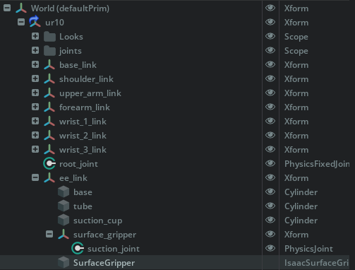
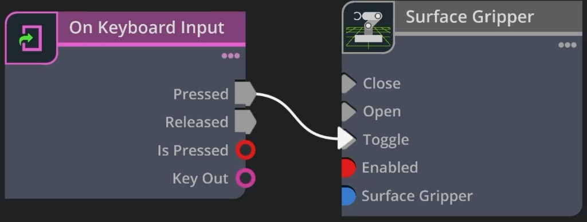
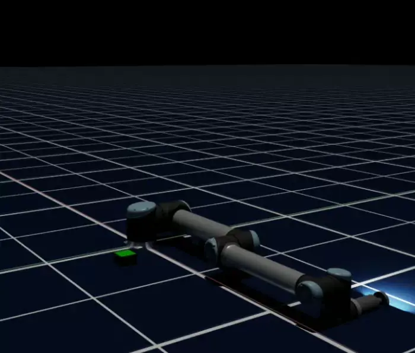

Surface Gripper 扩展#
关于#
Surface Gripper Extension 用于为末端执行器创建吸盘式夹爪。其工作原理是解析 USD Surface Gripper Schema 上的 Surface Gripper 属性，并在接触点处管理父刚体与子刚体之间的一组 D6 关节。
夹爪的物理属性在 D6 关节中定义，例如不同自由度上的关节限位，以及关节的刚度和阻尼。Surface Gripper 对象随后处理约束的激活，并根据抓取阈值定义被抓取的物体。
此扩展默认启用。如果它被禁用，可以通过在 Extension Manager 中搜索 isaacsim.robot.surface_gripper 和 isaacsim.robot.surface_gripper.ui 来重新启用它。
要通过 GUI 创建表面夹爪，请转到菜单 Create > Robots > Surface Gripper。这将在场景中创建一个 surface gripper prim。
API 文档#
有关使用信息，请参阅 API 文档。
设置 Surface Gripper#
Surface Gripper 具有以下属性：
属性 |
描述 |
|---|---|
附着点 |
用于将夹爪连接到对象的关节列表
|
状态 |
（只读）夹爪的当前状态
|
抓取对象 |
（只读）当前被夹爪抓握的对象列表
|
最大抓取距离 |
从夹爪点开始，允许闭合接触的距离范围
|
重试间隔 |
夹爪尝试闭合以抓取对象时持续尝试的时间长度
|
剪切力限制 |
在约束断裂之前，夹爪可以对对象施加的最大横向力
|
同轴力限制 |
在约束断裂之前，夹爪可以对对象施加的最大轴向力
|
附着关节#
用于将夹爪连接到对象的关节由 Surface Gripper Schema 中的 Attachment Points 属性定义。这是一个指向用于将夹爪连接到对象的 D6 关节的路径列表。这些关节必须在 USD 文件中的夹爪接触点处定义，并且必须为 D6 类型。关节的物理属性在 D6 Joint Schema 中定义，但必须为关节设置以下几个属性：
必须启用关节。
对于所有关节，Body 0 必须相同。
关节必须将“Exclude from Articulation”设置为 True。如果未设置，表面夹爪管理器将在运行时将其设置为 True。
附着点 API#
由 Attachment Points 属性定义的关节会自动分配 Attachment API。此 API 负责为关节提供附加属性，这些属性对于表面夹爪管理器处理夹爪是必需的。在 Attachment Point API 中，提供了以下属性：
Clearance Offset：此属性注册关节到父对象表面的距离。由于表面夹爪通过从关节世界位置发送射线检测来工作，因此会将此偏移量添加到射线检测起点，以避免与父对象发生误命中。如果未定义此偏移量，射线检测将从关节的世界位置开始，夹爪将在首次清除父对象碰撞体时自动计算并保存该偏移量。Forward Axis：此属性注册用于尝试闭合夹爪的关节轴。默认值为X。
这些附加属性可以在“Property”选项卡的“Raw USD Properties”部分找到。
添加 Attachment Joint API#
要添加 attachment joint API，请在 stage 中选择关节。在右侧面板的 Properties 选项卡下，点击 + Add 按钮，并导航至 Isaac > Robot Schema > Attachment Point API。


在 Property 选项卡中，选择 + Add > Isaac > Robot Schema > Attachment Point API。#
注意
创建 Surface Gripper 时，会自动将 Attachment Point API 应用于关节。无需手动添加。
Omniverse OmniGraph 节点#
Surface Gripper 扩展通过 Omniverse OmniGraph 提供了实现。要使用它，请在所需的图中添加一个 surface gripper 节点，并选择其要控制的 surface gripper prim。
提供以下输入：
Close：闭合夹爪。如果夹爪已闭合，则此操作无效。
Open：打开夹爪。如果夹爪已打开，则此操作无效。
Toggle：在打开和闭合状态之间切换夹爪。
Enabled：启用或禁用夹爪。
Surface Gripper：要控制的 surface gripper prim。


图编辑器中的 Surface Gripper 节点。#
完全通过代码创建 Surface Gripper#
本节介绍如何完全通过代码实现 surface gripper。这些代码片段来自 Surface Gripper Example 代码，并不完整。
定义 Surface Gripper 属性#
import usd.schema.isaac.robot_schema as robot_schema
from isaacsim.robot.surface_gripper import _surface_gripper as surface_gripper
gripper_prim_path = "/World/SurfaceGripper"
gripper_interface = surface_gripper.acquire_surface_gripper_interface()
# Create the Surface Gripper Prim
# Once it is created it can be saved and this doesn't need to be redone
robot_schema.CreateSurfaceGripper(stage, gripper_prim_path)
gripper_prim = stage.GetPrimAtPath(gripper_prim_path)
attachment_points_rel = gripper_prim.GetRelationship(robot_schema.Relations.ATTACHMENT_POINTS.name)
# Select the joints to the gripper
# The joints should be D6 joints defined in the usd file.
# All joint attributes can be defined as desired, except for:
# Joint Should be enabled
# Joint Type should be D6
# All Joint Parents should be the same Rigid body
# Exclude from Articulation must be checked
# No Break force/Torque should be set
# Joint drives can be used to derive the desired joint bounce/stretch behavior
# Enable/Disable the joint DoFs and limits as desired.
gripper_joints = [p.GetPath() for p in stage.GetPrimAtPath("/World/Surface_Gripper_Joints").GetChildren()]
attachment_points_rel.SetTargets(gripper_joints)
# Define the distance the joint can grasp, and at what distance from the origin of the joints it will settle
gripper_prim.GetAttribute(robot_schema.Attributes.MAX_GRIP_DISTANCE.name).Set(0.011)
# Define the Override Break limits
gripper_prim.GetAttribute(robot_schema.Attributes.COAXIAL_FORCE_LIMIT.name).Set(0.005)
gripper_prim.GetAttribute(robot_schema.Attributes.SHEAR_FORCE_LIMIT.name).Set(5)
# How long the gripper will try to close if it is open
gripper_prim.GetAttribute(robot_schema.Attributes.RETRY_INTERVAL.name).Set(1.0)
获取夹爪状态#
Surface Gripper 会在每个仿真步骤中更新，并且可以随时通过接口检索其状态：
status = gripper_interface.get_gripper_status(gripper_prim_path)
print(status) # Open, Closed, or Closing
控制夹爪#
夹爪状态通过接口的 open 和 close 方法进行控制。此外，还有 set_gripper_action 方法，该方法接收一个介于 -1 和 1 之间的数值，其中 < -0.3 将打开夹爪，> 0.3 将关闭夹爪，而介于两者之间的值将被忽略。
gripper_interface.close_gripper(gripper_prim_path)
gripper_interface.open_gripper(gripper_prim_path)
gripper_interface.set_gripper_action(gripper_prim_path, 0.5) # Closes the gripper
gripper_interface.set_gripper_action(gripper_prim_path, -0.5) # Opens the gripper
保持 USD 场景同步#
为了优化 Surface Gripper 更新性能，默认情况下禁用 USD 场景更新。当禁用 USD 写回时，Surface Gripper prim 的 Properties 面板不会自动更新。仍然可以通过 surface gripper 接口的 get_gripper_status 方法检索 surface gripper 状态，并可以通过 surface gripper 接口的 get_gripped_objects 方法检索当前被夹爪抓取的物体。
可以通过在 Surface Gripper 接口上将 set_write_to_usd 属性设置为 True 来启用 USD 写回。这是所有 surface gripper 实例的全局设置。
教程与示例#
Surface Gripper 物体抓取独立示例#
此独立示例构建了一个最小场景，包含一个运动学载体、一个动态夹爪主体、一个 D6 连接关节、一个 Surface Gripper prim 以及一个目标立方体。夹爪下压至立方体上方，闭合以抓取立方体，将其抬起，然后张开以释放立方体。
./python.sh standalone_examples/api/isaacsim.robot.surface_gripper/gripper_grasp.py
关键概念：
一个
SurfaceGripperprim 引用一个或多个附着点。这些是携带IsaacAttachmentPointAPI的 D6 关节。在闭合时，夹爪沿每个附着点的前向轴进行射线检测，并将关节重新指向其命中的第一个物体。对于此最小独立示例，D6 连接关节锁定了全部六个自由度（
low > high）。本页后续的 UR10 演练则配置了受限运动以及 Z 轴驱动，以模拟吸盘的柔顺性。GripperView.apply_gripper_action驱动夹爪：正值表示闭合/抓取，负值表示张开/释放。get_surface_gripper_status和get_gripped_objects用于读取结果。
gripper_grasp.py: surface gripper and attachment point setup
# Attachment-point joint: D6 between gripper body (body0) and carrier
# (body1). This joint's only purpose is to mark the surface-gripper
# attachment pose -- the prismatic above does the structural work.
stage_utils.define_prim(GRIPPER_JOINTS_SCOPE, "Scope")
attach = UsdPhysics.Joint(stage_utils.define_prim(ATTACH_JOINT_PATH, "PhysicsJoint"))
attach.CreateBody0Rel().SetTargets([GRIPPER_BODY_PATH])
attach.CreateBody1Rel().SetTargets([CARRIER_PATH])
# 180-deg flip about X so the joint's local Z points DOWN (toward cube).
flip_x = Gf.Quatf(0.0, 1.0, 0.0, 0.0)
attach.CreateLocalPos0Attr().Set(Gf.Vec3f(0.0, 0.0, -GRIPPER_SIZE / 2.0))
attach.CreateLocalRot0Attr().Set(flip_x)
# body1 (carrier) local pos doesn't really matter for the attachment, just
# make it sensible relative to where the gripper sits initially.
attach.CreateLocalPos1Attr().Set(Gf.Vec3f(0.0, 0.0, GRIPPER_INIT_Z - CARRIER_Z - GRIPPER_SIZE / 2.0))
attach.CreateLocalRot1Attr().Set(flip_x)
attach.CreateExcludeFromArticulationAttr().Set(True)
attach_prim = attach.GetPrim()
# Lock all 6 DOFs (low > high == locked). This is critical: when the
# surface gripper closes, it re-points body1 of THIS joint at the gripped
# object, so the joint's DOF locks become the gripper-to-object constraint.
for axis in ("transX", "transY", "transZ", "rotX", "rotY", "rotZ"):
limit = UsdPhysics.LimitAPI.Apply(attach_prim, axis)
limit.CreateLowAttr().Set(1.0)
limit.CreateHighAttr().Set(-1.0)
robot_schema.ApplyAttachmentPointAPI(attach_prim)
prim_utils.create_prim_attribute(
attach_prim,
name=robot_schema.Attributes.FORWARD_AXIS.name,
type_name=robot_schema.Attributes.FORWARD_AXIS.type,
).Set("Z")
prim_utils.create_prim_attribute(
attach_prim,
name=robot_schema.Attributes.CLEARANCE_OFFSET.name,
type_name=robot_schema.Attributes.CLEARANCE_OFFSET.type,
).Set(0.005)
surface_gripper_prim = robot_schema.CreateSurfaceGripper(stage, GRIPPER_PRIM_PATH)
surface_gripper_prim.GetRelationship(robot_schema.Relations.ATTACHMENT_POINTS.name).SetTargets([ATTACH_JOINT_PATH])
gripper_grasp.py: gripper view and grip control
# Mirror gripper state (status, gripped objects) back to USD, then wrap the
# SurfaceGripper prim in a GripperView to drive it from Python.
_surface_gripper.acquire_surface_gripper_interface().set_write_to_usd(True)
gripper_view = GripperView(
paths=GRIPPER_PRIM_PATH,
max_grip_distance=[0.02],
coaxial_force_limit=[100.0],
shear_force_limit=[100.0],
retry_interval=[1.0],
)
# Positive action closes/grips, negative opens/releases:
# gripper_view.apply_gripper_action([0.5]) # close
# gripper_view.apply_gripper_action([-0.5]) # open
Surface Gripper 示例（龙门架）#
此示例展示了一个安装在龙门架上的表面夹爪，其中包含可被夹爪抓取的立方体。该表面夹爪通过代码添加，并通过 Surface Gripper Omniverse OmniGraph 节点进行连接。
要运行该示例：
从 Windows > Examples > Robotics Examples 中打开 Robotics Examples。
选择 Manipulation > Surface Gripper Example。
按下 Load 按钮。场景应开始播放。
您可以使用游戏手柄轴移动龙门架，或手动编辑龙门架关节的目标位置。
将龙门架移动到某个立方体或一组立方体附近，然后单击“Open/Close”按钮——按钮标签反映当前夹爪状态。也可以通过游戏手柄上的下面按钮关闭夹爪（例如 PlayStation 控制器上的 X 按钮，或 Xbox 控制器上的 A 按钮）。
夹爪将尝试闭合以抓取立方体，如果成功，立方体将被夹爪夹持。
抬起龙门架。除非受力过大，否则立方体将保持被夹爪夹持；如果受力过大，夹爪约束可能会断裂。

操作指南#
本操作指南演示如何将由简单图元构建的简单吸盘式末端执行器附加到 UR10 机械臂上，以及如何使用 Surface Gripper 扩展来控制夹爪。抓取和堆叠序列使用 cuMotion RMPflow 控制器。
学习目标#
在本示例中，您将：
将由简单图元构建的吸盘式末端执行器附加到 UR10 上。
使用 IsaacAttachmentPointAPI、限位和驱动器配置 D6 关节，以用于 Surface Gripper。
添加一个 Surface Gripper prim，其 Attachment Points 引用该关节。
使用 Surface Gripper 运行抓取和堆叠序列。
入门指南#
先决条件
熟悉 Isaac Sim 中的 stage tree 和 Property 选项卡，或已完成 教程 2：组装简单机器人。
创建 Surface Gripper 几何体#
前往 File > New 以启动一个空的 stage。
在 Content Browser 中，打开 Isaac Sim > Robots_Multiphysics > UniversalRobots > ur10，然后将
ur10.usda拖入视口。将 UR10 的平移和旋转归零，使其在 stage 中居中。在 Stage tree 中，展开
/World/ur10并找到 Xformee_link。你将把夹爪视觉模型和 Surface Gripper 附加到此 link，以便它们随手腕一起移动。
在 ee_link 下添加圆柱体几何体
使用三个 Cylinder prim（Create > Shape > Cylinder）。对于每个圆柱体，将其父级设置为 ee_link，重命名它们，并根据下表在 Property 选项卡中设置 Translate、Orient（度）和 Scale。
Prim 名称 |
平移 |
Orient（度） |
缩放 (X, Y, Z) |
|---|---|---|---|
|
|
|
|
|
|
|
|
|
|
|
|
你可以为圆柱体添加材质属性，使其看起来更逼真。


带有 base、tube 和 suction_cup 的 UR10，这些部件的父级为 ee_link。#
创建 D6 Joint 和 AttachmentPointAPI#
在 ee_link 下，创建一个名为 surface_gripper 的 Xform。通过点击 Create > Physics > Joints > D6，添加一个名为 suction_joint 的 D6 关节。将 Body 0 设置为 /World/ur10/ee_link，Local Position 0 设置为 (0.17, 0, 0)，Local Rotation 0 设置为 (0, 90, 0)。启用 Exclude from Articulation。

位于夹爪尖端的 D6 关节 suction_joint。#
配置 D6 关节
D6 关节暴露了六个可独立配置的自由度。为了模拟吸盘的柔顺性，您可以设置沿吸力方向的线性限位，使吸盘在负载下能够下垂或压缩，并设置旋转限位，使抓取物体在接触点能够弯曲或扭转。较高的刚度会产生更稳固的抓取，而添加阻尼可防止振荡。这些设置共同允许您在没有真实软体物理的情况下模拟弹性变形。
在本示例中，我们为每个旋转轴添加约 -5 到 5 度的小限位，并为 Z 轴限位添加 0.01 米，以允许沿夹爪法线方向有一定的柔顺性。此外，通过点击 + Add > Physics > Z Axis Translation Drive 添加一个 Z Axis Translation Drive。将 Stiffness 设置为 1000，将 Damping 设置为 100。这些值可以根据您的具体应用进行调整。
在 suction_joint 上应用 AttachmentPointAPI
注意
AttachmentPointAPI 会在创建 Surface Gripper prim 时自动应用到关节上（参见下一节）。以下是显式方法。有关更多详细信息，请参阅 添加 Attachment Joint API。
选择
suction_joint。在 Property 选项卡中，点击 + Add > Isaac > Robot Schema > Attachment Point API 以应用它。在 Property 选项卡的 Attachment Point 下确认新属性。
将 Attachment Point 部分中的 Forward Axis 设置为
Z，以使吸附方向与夹爪对齐。
添加 Surface Gripper Prim#
Surface Gripper prim 用于控制夹爪的吸附动作。您可以在 UI 中或通过 Python 创建它。可以使用 OmniGraph 节点从图形中控制夹爪。
在 Stage Tree 中右键单击
ee_link，选择 Create > Isaac > Robots > Surface Gripper。如果新的 prim 不在
ee_link下，请将其拖动以使其作为ee_link的子级。选择 Surface Gripper prim。将 Max Grip Distance 设置为
0.02。将 Attachment Points 设置为您先前创建的 D6 关节的阶段路径（
suction_joint）。
您可以将 Retry Interval、Shear Force Limit 和 Coaxial Force Limit 保持为默认值，直到需要进行调整为止。如果抓取释放得太容易或始终无法保持，请调整这些字段（请参阅 Setting up a Surface Gripper 下的属性表）。


ee_link 下的阶段层级结构：夹爪圆柱体、surface_gripper / suction_joint 以及 Surface Gripper prim。#
完成前面的部分后，在 Script Editor 中运行以下代码。它模拟了 GUI 选项卡的行为：它将在 ee_link 下创建 prim，将 Attachment Points 设置为 suction_joint，并将 Max Grip Distance 设置为 0.02。
# Create and configure a Surface Gripper prim under ee_link (same outcome as the GUI tab).
# Run with the Isaac Sim stage loaded; paths must match your robot and suction_joint from the walkthrough.
import omni.usd
import usd.schema.isaac.robot_schema as robot_schema
from isaacsim.robot.surface_gripper import create_surface_gripper
from pxr import Sdf
stage = omni.usd.get_context().get_stage()
# Parent Xform for the tool (same as in the walkthrough when the robot lives under /World/ur10).
ee_link_path = "/World/ur10/ee_link"
# D6 joint configured earlier under surface_gripper (see walkthrough).
suction_joint_path = f"{ee_link_path}/surface_gripper/suction_joint"
# Create a SurfaceGripper prim under ee_link using the convenience function.
gripper_prim = create_surface_gripper(stage, ee_link_path)
# **Attachment Points** → suction_joint
attachment_points_rel = gripper_prim.GetRelationship(robot_schema.Relations.ATTACHMENT_POINTS.name)
attachment_points_rel.SetTargets([Sdf.Path(suction_joint_path)])
# **Max Grip Distance** = 0.02 (defaults for retry / force limits match the GUI until you tune them)
gripper_prim.GetAttribute(robot_schema.Attributes.MAX_GRIP_DISTANCE.name).Set(0.02)
create_surface_gripper 是您在 UI 中选择 Create > Isaac > Robots > Surface Gripper 时使用的相同函数；它会选择一个空闲的 prim 名称，例如 SurfaceGripper 或 SurfaceGripper_01。如需进行更底层的控制，请直接调用 robot_schema.CreateSurfaceGripper —— 请参阅 Creating a Surface Gripper fully in code。
请确保您已先完成 GUI 或 Code 选项卡中的步骤。Surface Gripper 无法在 OmniGraph 中创建，但可以通过图中的逻辑进行控制。如下所示，可以使用 Surface Gripper 节点在打开和关闭状态之间切换夹爪，以及完全启用/禁用夹爪。
打开 Window > Graph Editors > Action Graph，然后选择 New Action Graph。
在图形搜索字段中，找到 Surface Gripper 并将其添加到图形中。
选择 Surface Gripper 节点。在属性面板中，将 SurfaceGripper 目标设置为您之前创建的 prim 路径；例如
/World/ur10/ee_link/SurfaceGripper。若要通过键盘驱动 Toggle，请添加一个 On Keyboard Input 节点。在 Property 选项卡中，A 是默认按键，用于在物理模拟播放期间切换夹爪。

Surface Gripper 节点。另请参阅 Omniverse OmniGraph Node。#
保存自定义机器人#
堆叠演示引用了位于 /World/robot 的 USD 文件，因此机器人必须是该 USD 文件的 Default Prim，并且必须位于文件的根层级——不能嵌套在 /World 作用域下。
在 Stage 树中，将
/World/ur10拖动到根层级，使其变为/ur10。右键单击
/ur10并选择 Set as Default Prim。删除现在为空的
/World和/EnvironmentXforms。将 stage 保存为 USD 文件。
运行演示#
使用打包的 UR10 运行
Isaac Sim 附带了一个 UR10 USD 文件，其中包含一个 Surface Gripper prim 以及控制该夹爪所需的关节。在此，我们将演示使用附带的 UR10 执行完整的抓取和堆叠序列。该示例使用 Surface Gripper 拾取两个立方体并将它们堆叠起来。
从 Isaac Sim 安装文件夹（即 python.sh 所在的位置）运行：
./python.sh standalone_examples/api/isaacsim.robot_motion.examples/manipulation/stacking.py --robot ur10
此操作使用标准的 UR10 USD 及其附带的 cuMotion 配置，以便在您替换自己的文件之前，先验证脚本和抓取堆叠序列。

使用原始附带的 UR10 进行抓取和堆叠。#
使用您保存的 USD 运行
将您之前保存的 USD 文件传递给 --usd-path 参数：
./python.sh standalone_examples/api/isaacsim.robot_motion.examples/manipulation/stacking.py --robot ur10 --usd-path /path/to/your/ur10_custom.usd
--usd-path 参数仅覆盖 USD 资产。默认情况下，示例继续使用附带的 UR10 机器人配置。若要覆盖该配置，请提供机器人配置目录。请参阅 cuMotion 机器人配置教程 以生成并验证所需的文件。
./python.sh standalone_examples/api/isaacsim.robot_motion.examples/manipulation/stacking.py \
--robot ur10 \
--usd-path /path/to/your/ur10_custom.usd \
--robot-config-dir /path/to/your/robot_config \
--urdf ur10.urdf \
--xrdf ur10.xrdf
--urdf 和 --xrdf 文件名默认分别为 robot.urdf 和 robot.xrdf。配置目录还必须包含 rmp_flow.yaml。USD、URDF 和 XRDF 必须与所选 --robot 配置的关节名称、运动学和工具坐标系相匹配。USD 还必须保留 articulation root 和 Surface Gripper prim 路径。
本指南中的自定义 USD 使用标准 UR10 臂的运动学，因此自定义参数是可选的。当碰撞避免需要考虑自定义夹爪几何形状时，请提供自定义 XRDF。


使用自定义圆柱形夹爪和 Surface Gripper 设置的相同演示。#